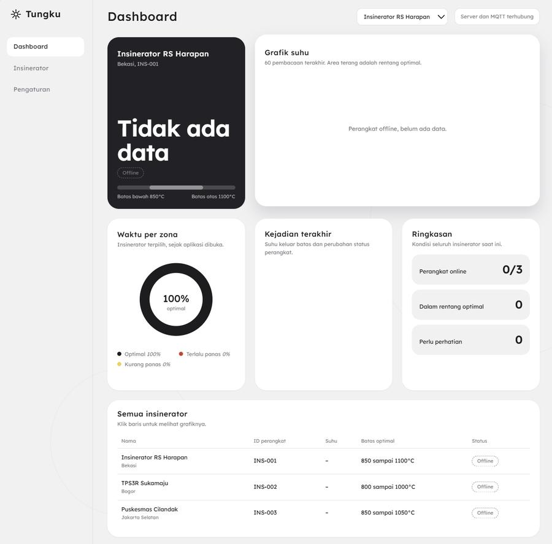
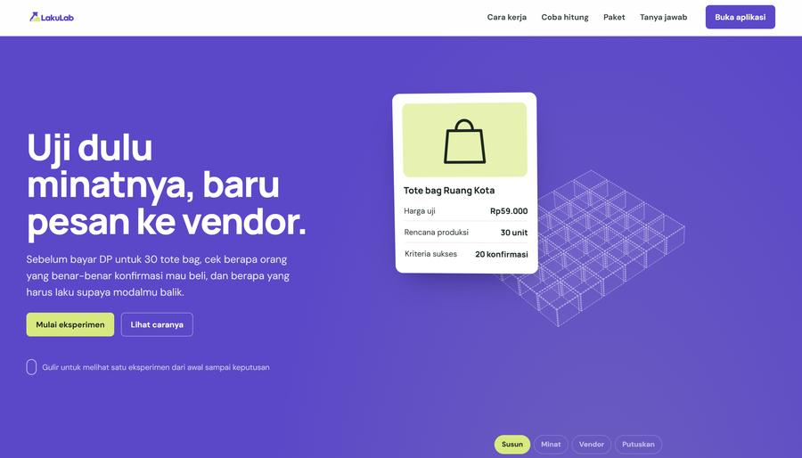
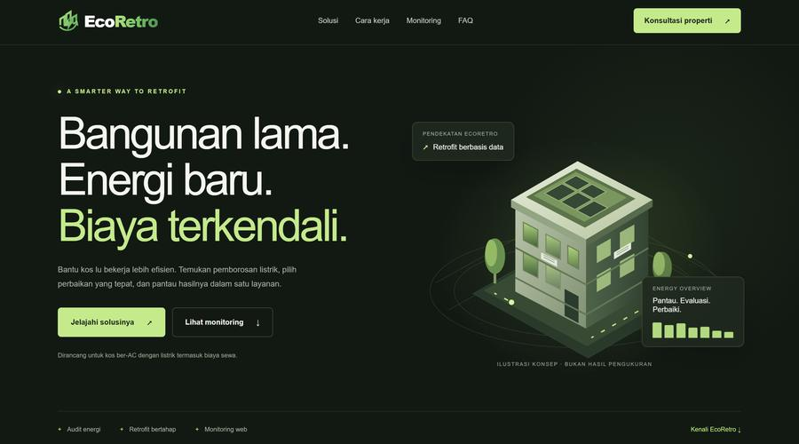
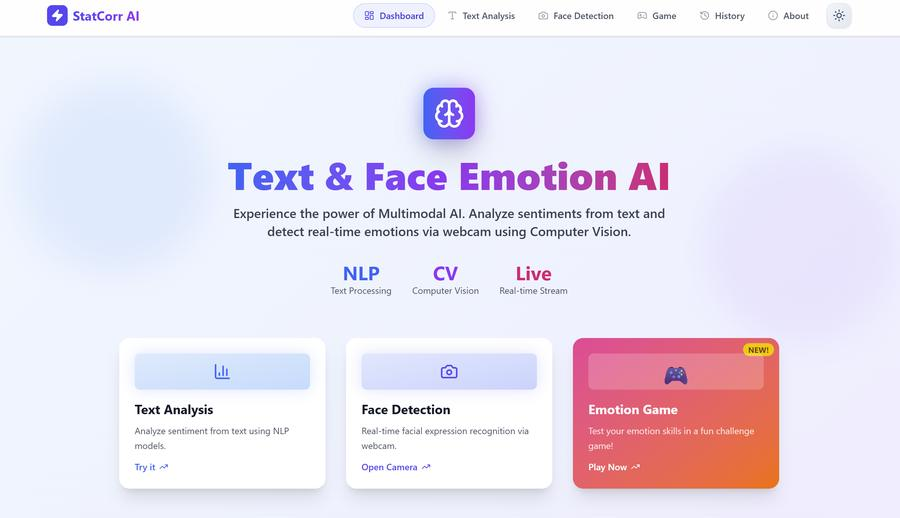
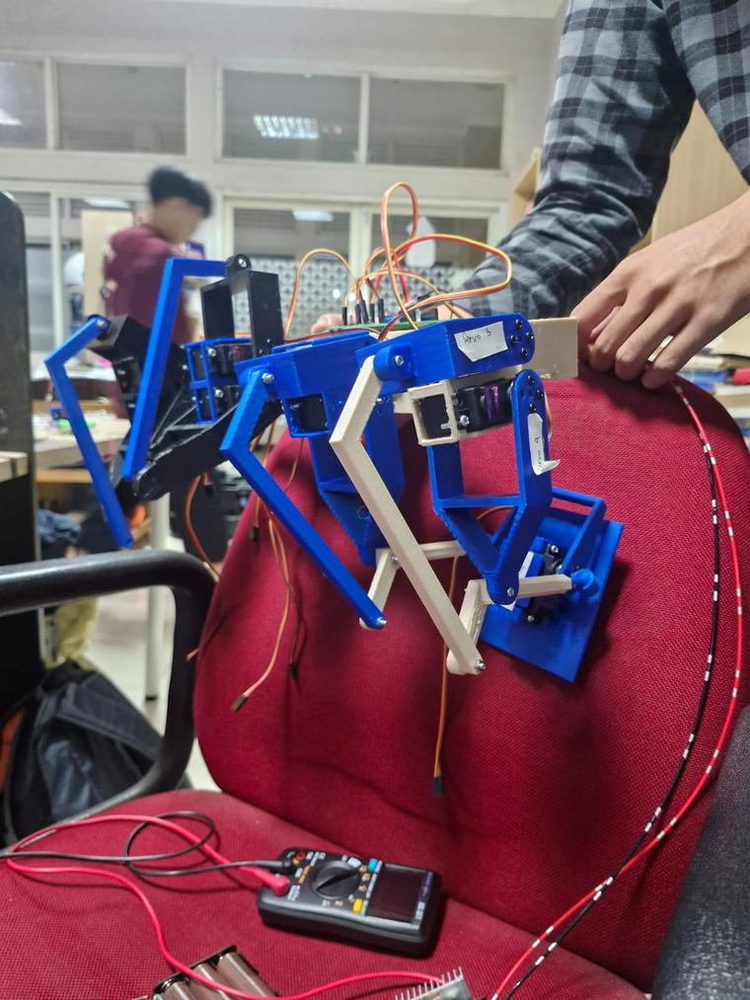

Tungku
Monitoring dashboard for incinerators: temperature per device, optimal range, and online status over MQTT.
dashboardMQTTIoT
Data Science student who keeps wandering into robots, computer vision and AI agents, and then actually building them.

Monitoring dashboard for incinerators: temperature per device, optimal range, and online status over MQTT.

Landing page for a tool that tests real demand before a seller pays a vendor for production.

Landing page for data-driven energy retrofits in air-conditioned boarding houses (kos).
An IoT system that reads soil moisture with an ESP, so you can see when a plant needs water.
Tap an RFID card to check in: the reader identifies the card and logs the attendance record to a database.

Text & face emotion AI: sentiment from text, facial expressions from a live webcam with YOLO, plus a small emotion game.

A servo-driven humanoid: build, wiring and motion control.
A small automated guided vehicle that drives itself along a set path.
Two line-follower competitions, one national and one international. Tuning was the hard part: I learned how many factors change the way a robot behaves on a real track.
MedQuest, a web platform for medical students to practise anamnesis. I led market analysis and the business side.
NutriFlow, an autonomous nutrient-dosing controller for hydroponics. Market analysis and business model.
NutriFlow (team Tiga Fasa): embedded-AI monitoring and nutrient dosing for NFT hydroponics, tracking pH, EC and temperature.
Built an ML pipeline to predict MSME (UMKM) success.
Mostly on the software side of the lab's robotics and computer-vision projects.
A river trash barrier and water-quality monitoring, built with local residents.
First-meet event for Data Science students, run by the himpunan.
Teaching an autonomous mobile robot to find its dock with a camera and AprilTag markers. Work in progress at INACOS Lab.